断熱材とは
本セクションでは断熱材選びで知っておきたい「定義と歴史」「選び方」「信頼性確認方法」について開設しています。
断熱材の定義と歴史
断熱材の定義
材料を通じて単位時間・単位面積あたりの熱の移動が小さな材料で、熱の移動を抑制する目的で使用される材料のことをいいます。
JIS規格（JIS A 9521「建築用断熱材」）では23℃の熱伝導率が0.065W/(m･K)以下の材料と定義しています。
各種断熱材の開発時期
熱の移動を抑制し温かい料理を保温するために布で包んだり、寒さを防止するためにセーターを着るなど人間は古くから断熱材を利用してきましたが、工業的に断熱材を使用し始めたのは蒸気機関が発明されてからです。使用される断熱材が規格化されたのは第一次世界大戦前後で、戦艦の蒸気配管断熱の軍規格が最初と言われています。
戦後多くの種類の断熱材が開発され、生産･需要の拡大を受け規格も整備されてきました。各種断熱材の開発･製造開始時期を表にまとめました。
断熱材・関連資材の選び方
各種断熱材や断熱工法についてはネット上に色々な情報が氾濫しています。その中には非常に有用な情報もありますが、製品の持つ性能の極一面だけを取り上げて説明するものや、他材料や工法の欠点を列挙しているものも多く、情報交換のSNSや有名企業のHP等でも、そのような一方的な情報が散見されるのが現状です。
情報を調べたり、ビルダーとの打ち合わせなどの際にも十分注意するのが良いでしょう。
＜情報を入手する際に注意する点＞
万能の断熱材・工法は有りません
建物には建築基準法で定められる耐震性、防火性能、建築物省エネ法で定められる一次エネルギー消費量等色々な性能が求められます。それらを一括して評価・表示する方法が住宅性能表示性能です。
色々な断熱材、工法のいずれも万能ではなく、それぞれに長所・短所がありますが、住宅金融支援機構仕様書に記載されている材料・工法はそれぞれの短所を補う技術が認められ、施工者等に普及している材料・工法になりますから、安心して使用することができます。一方、他の材料や工法の欠点や自らの製品や工法の利点ばかりが記載されている情報源の信用性は低いといえます。
また、建築は人の寿命以上の長さで使用される資産ですから、新しい材料や工法が将来どのような変化を起こすかは未知であることも考慮する必要があります。
断熱材・工法に優劣はありません
建物には建築基準法で定められる耐震性、防火性能、建築物省エネ法で定められる一次エネルギー消費量等色々な性能が求められます。それらを一括して評価・表示する方法が住宅性能表示性能です。
色々な断熱材、工法のいずれも万能ではなく、それぞれに長所・短所がありますが、住宅金融支援機構仕様書に記載されている材料・工法はそれぞれの短所を補う技術が認められ、施工者等に普及している材料・工法になりますから、安心して使用することができます。一方、他の材料や工法の欠点や自らの製品や工法の利点ばかりが記載されている情報源の信用性は低いといえます。
また、建築は人の寿命以上の長さで使用される資産ですから、新しい材料や工法が将来どのような変化を起こすかは未知であることも考慮する必要があります。
断熱材・工法のここに注目したい
断熱材や工法の選択をしようとすると、つい熱伝導率や吸水性等の性能値や熱橋の発生度合いに目が行きがちになります。しかし断熱材や工法を選択するためにはまず家を面で覆う工法なのか隙間に断熱する工法なのかを選びます。面で覆う工法であれば断熱材は面を一気にカバーできるボード状の断熱材が施工するのに楽です。一方、隙間に施工するのであれば自由な形状に変形できる断熱材が使いやすいと考えられます。
施工しやすい断熱材を使った工法では施工ミスや不具合が発生しにくくなるので、結露等の発生危険性も低くなります。さらに、古民家などを見ると木造とは言っても浴室や厨房、書斎など部屋の用途や部位毎に使う木材樹種を変えています。同じように、高断熱住宅で全ての部位を同じ断熱材で施工しなければいけない理由はありません。断熱したい部位の特性や形状に合わせて最も施工しやすい断熱材を選択するのが、賢い選択方法です。
高性能な断熱材を使用すると高性能な住宅が建つわけではありません。
高性能な断熱材というと、熱伝導率の小さな断熱材に目が行きます。では熱伝導率の小さな断熱材を使用すると高性能な住宅になるのでしょうか。
建築物省エネ法では住宅性能をUa値で表します。Ua値は壁や床などの各部位毎の熱貫流値に面積をかけて求められる部位熱間貫流値の和として求められます。さらに各部位の熱貫流値は使用されている断熱材厚さを熱伝導率で割った熱抵抗値から求められています。したがって、Ua値あるいは壁などの部位熱貫流値が決められている場合には、熱伝導率の小さな高性能断熱材を使用するといってもそれは断熱材の厚さを薄く施工することになるだけで、必ずしも住宅の断熱性能が高くなることにはなりません。高性能断熱材を使用して、かつ断熱材の厚さも確保し、適切な施工がなされた場合に住宅の断熱性能向上に寄与することになるのです。
断熱材種類と形状
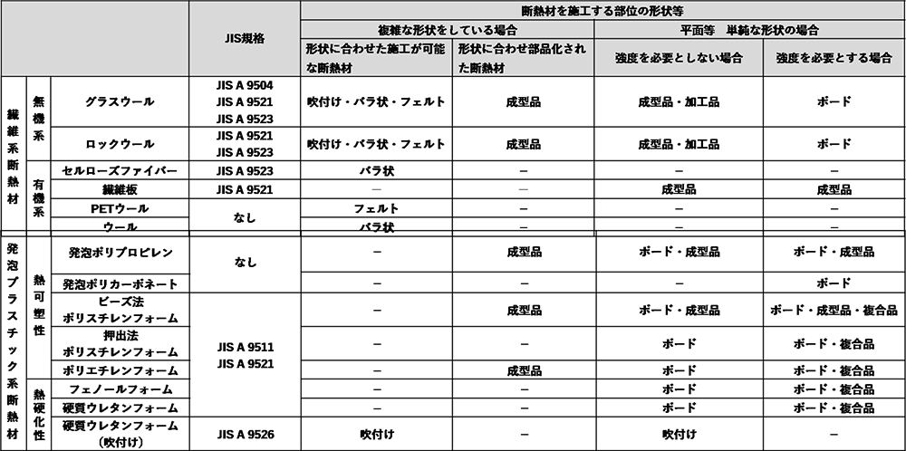
断熱材の選び方（断熱材の形状と施工方法）
断熱材は施工する部位や施工方法、施工する場所の形状などを考え適切な材料を選択することによって、容易にミス無く施工できるようになります。
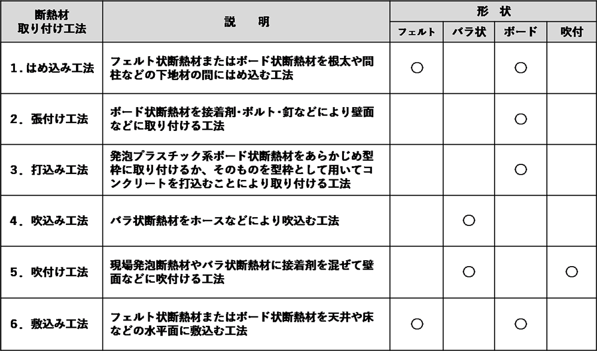
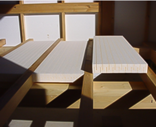
- はめ込み工法
- （木造根太間断熱の例）
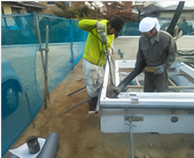
- 張付け工法
- （RC 造外壁外断熱の例）
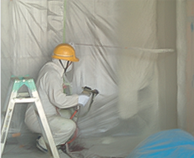
- 打込み工法
- （基礎外側断熱の例）
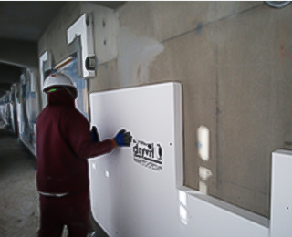
- 吹込み工法
- （木造柱・間柱間断熱の例）
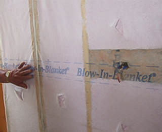
- 吹付け工法
- （RC造外壁内断熱の例）
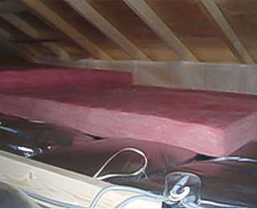
- 敷込み工法
- （木造桁上断熱の例）
断熱材の形状と特徴・施工上の注意点（繊維系断熱材）
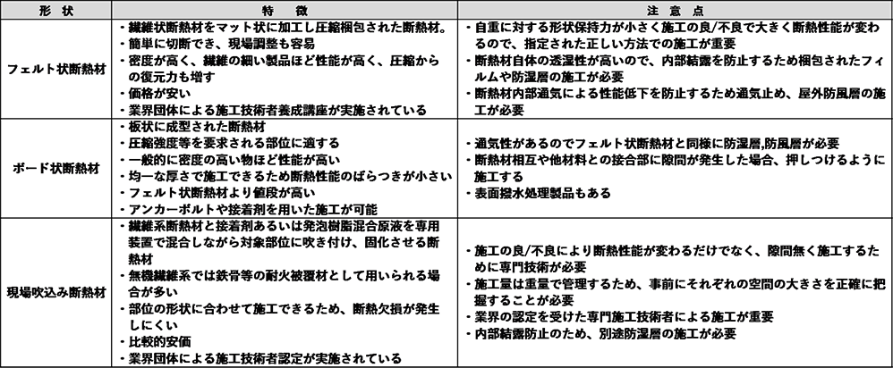
断熱材の形状と特徴・施工上の注意点（発砲プラスチック系断熱材）
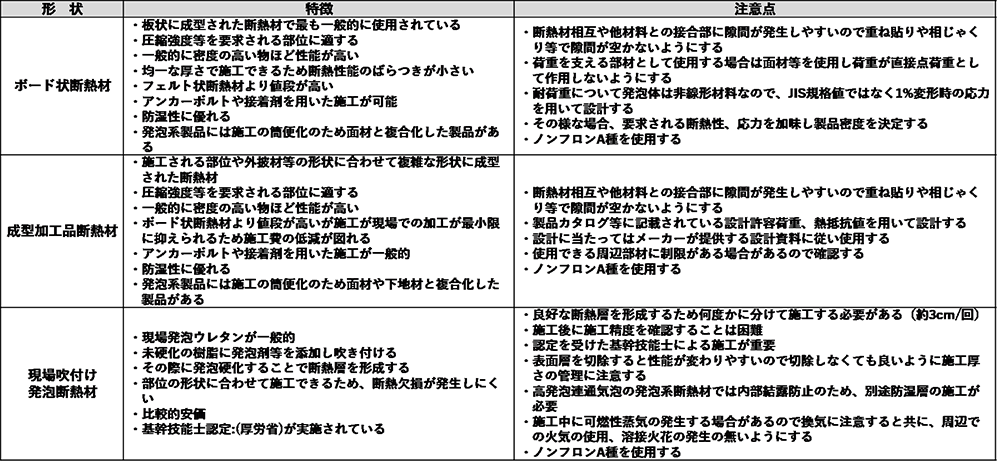
製品の信頼性表示マーク
メーカー表示値の信頼性
メーカーが製造した製品の物性が知りたい場合、多くの建材で測定方法や製品規格をJIS化し、複数の製品が比較できるように運用されています。
しかし、全ての建材にJISがあるわけではなく、同列の製品であっても新製品で従来の製品規格よりも高い性能を持つ場合など、JIS規格だけでは対応しきれない事案もあり、JIS規格を補完するような信頼性の高い表示方法が必要とされています。
メーカーが表示する性能値をどの様に法制度で取り扱うかは平成12年の住宅性能評価制度開始時に問題となり、建設省住宅局住宅生産課事務連絡「住宅性能評価における建材，設備，部品等の取扱いについて」（表4.1.7）としてまとめられ、その後の第三者認証（確認）の基本となっています。
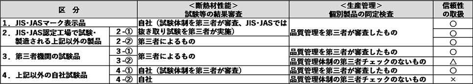
表のように「市販製品の性能値とメーカー表示値の検証」、「生産管理の妥当性」を確認することが必要とされ
A区分（○の製品）：「市販製品の性能値とメーカー表示値の検証」､「生産管理の妥当性」
両方が第三者による確認がなされている製品
B区分（△の製品）：一方しか第三者確認を受けていない製品
C区分（×の製品）：両方とも第三者の確認を受けていない製品
に区別し、使用者はA区分の製品を選ぶことが望ましいと考えられています。
メーカー表示値の信頼性を証明する方法
各種環境性能ラベルを利用し表示することでメーカー表示値の信頼性を表すことが一般的に行われています。
ISOで標準化された3種類の環境ラベル（タイプⅠ、Ⅱ、Ⅲ）
- タイプⅠ ：
- 第三者機関が認証したシンボルマークで表わすタイプ＜ISO14024（JIS Q 14024）＞
例：JISマーク、エコマーク、優良断熱建材（EI）認証等
- タイプII ：
- 企業が決められた手法で評価し結果を元に行う自己適合宣言＜ISO14021（JIS Q 14021）＞
例：グリーン購入法特定調達品目判断基準
- タイプTII ：
- 企業が決められた手法で評価した結果を公表する情報提供＜ISO14025（JIS Q 14025）＞
例：会社の経営報告書、IR報告書、環境報告書、CSR報告書等
公正取引委員会では環境性能を表示する際の5つの留意事項をまとめています。
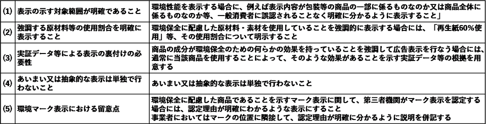
タイプⅠが最も信頼性が高く、タイプⅡ、Ⅲでは自社のお手盛り審査とならないように判定の根拠となる資料を外部に公表したり、判定過程を第三者に確認依頼する等の方法によりその信頼性を確保することが必要とされています。
断熱性を選択する際に便利な判断基準及び認証メーク
- ■JIS認証
-
- 国内で最も長く運用されている認証制度
- タイプⅠの認証制度で高い信頼性と長い実績がある
審査時には、製品等の品質管理を対象とするISO9000シリーズと同等以上のマネージメントシステムと製品の製造管理に必要とされる技術水準、検査水準が審査されます。通常、更新審査（３年毎）、不定期審査（システムの重大な変更等）が行われます。
1921年の勅令第164号に基づいて、日本標準規格を元に運用されてきた認証で、戦後、1949年に以下の目的のために工業標準化法が制定され多くの対象品目で運用されてきました。
工業標準化法の目的
・経済・社会活動の利便性の確保（互換性の確保等）
・生産の効率化（品種削減を通じての量産化等）
・公正性を確保（消費者の利益の確保、取引の単純化等）
・技術進歩の促進（新しい知識の創造や新技術の開発・普及の支援等）
・安全や健康の保持
・環境の保全等
工業標準化法では対象が工業製品や試験規格でしたが、新たな対象としてデータやサービス等を加え2019年に産業標準化法が制定され、規格名を日本産業規格 に変更されました。
- ■エコマーク
-
- 環境保全型商品の普及を目的に、1989年（財）日本環境協会が始めたタイプⅠ型
- タイプⅠの認証制度で高い信頼性と長い実績がある
エコマーク商品類型 No.123
「建築製品（内装工事資材）Version2.15」
認定基準書 分類 C-4 ～断熱関係用材～
適用範囲
□人造鉱物繊維保温材 JIS A 9504
□発泡プラスチック保温材 JIS A 9511、およびこれに相当する保温材
□住宅用人造鉱物繊維断熱材 JIS A 9521
□吹込み用繊維質断熱材 JIS A 9523
□建築物断熱用吹付け硬質ウレタンフォーム JIS A 9526
□無機･有機混合系断熱材および無機系断熱材
再生材料配合率および熱伝導率に関する表
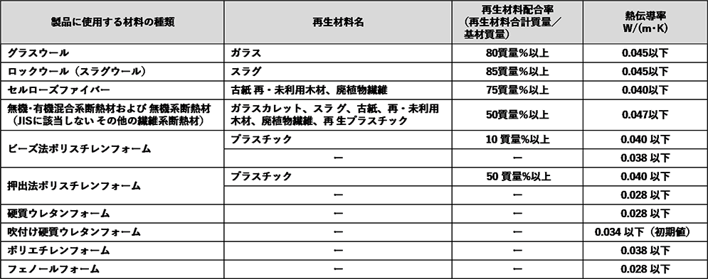
断熱材を選択する際に便利な判断基準及び認証マーク
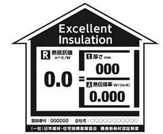
- ■EI認証
-
タイプⅡ自己適合宣言を主体とする認証制度だが、
適合宣言の妥当性を第三者として確認するという方法で信頼性を確保する
2010年に開始された住宅版エコポイント制度において製品登録対象断
熱材を審査する際に、JISを超える性能の断熱材や、JISのない断熱材が多数申請され登録審査に支障をきたしました。特に問題となったのは製品性能の確認（申請値が製品を代表する値である証明方法）や、製造時の品質管理状態の確認を行うことができないことでした。
その点、JIS認証品は認証の取得確認だけで審査が終了できますが、新たなJIS規格策定は複数の製造者が存在し、性能評価が十分に行われた製品でなければ制定することが困難で、制定までに時間がかかってしまう事が問題でした。
認証に当たっては、申請時に断熱材の製造方法や断熱性能の発現機構を元に品質管理項目等を審査委員会で決定し、その管理体制や統計処理により決定された性能値を製造者が自己適合宣言します。本審査ではさらに、適合宣言の妥当性を第三者として確認するという方法でタイプⅡ認証のもつ脆弱性を排除し信頼性を確保しています。
EI認証の区分（2020年末現在）
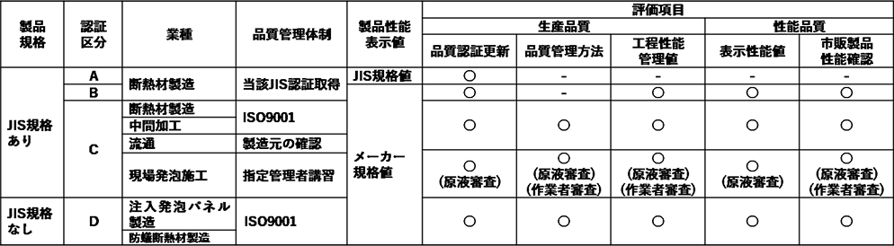
断熱材を選択する際に便利な判断基準及び認証マーク
- ■グリーン購入適合品
-
- 2000年「再生品等の供給面の取組」、需要面からの取組の観点から定められた「国等による環境物品等の調達の推進等に関する法法 律（グリーン購入法）」に基づく。
- 第三者の確認を行わない製造者による自己適合宣言なので、適合の妥当性を確認するには製造者への問い合わせが必要
国が定めた品目と判断基準に適合していることを製造者が自己適合宣言し、公共事業等で使用する際に優先的に使用を検討することが求められています。製造者による自己適合宣言であり、判断基準は定期的に更新されるので、変更された際には製造者に適合の可否を確認する必要があります。
環境物品等の調達の推進に関する基本方針 令和２（２０２０）年２月版
断熱材
【判断の基準】
○建築物の外壁等を通しての熱の損失を防止するものであっ て、次の要件を満たすものとする。
①フロン類が使用されていないこと。
②再生資源を使用している又は使用後に再生資源として使用できること。
【配慮事項】
○押出法ポリスチレンフォーム断熱材、グラスウール断熱材及びロックウール断熱材については、可能な限り熱損失防止性能の数値が小さいものであること。
備考）１ 「フロン類」とはフロン類の使用の合理化及び管理の適正化に関する法律（平成 13 年法 律第 64 号）
第２条第１項に定める物質をいう。
２ 「熱損失防止性能」の定義及び測定方法は、「断熱材の性能の向上に関する熱損失防止建築材料製造事業者等の判断の基準等」
（平成25年経済産業省告示第 270 号）による。
第三者によるグリーン購入対応情報提供サイトとして以下があります。特にタイプⅠのエコマーク認証は上位互換性があり信頼性が確保されます。